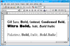
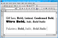

It is a fact that Linux lacks good high quality fonts for general use. In the other hand, Microsoft invests time and money to provide a nice and clean look and feel with high quality fonts like Verdana and Tahoma. The result of this work is found in their typography web site. This is an attempt to give Linux end users a very easy way to use them, trough an RPM package.
These fonts are free only for who have a Microsoft Windows license.
These are screenshots of some fonts included in these packages (click to enlarge):
These fonts area also excelent for international text, as you can see in the screenshots:
The fonts are divided in 2 subpackages: msfonts and msfonts-style. You can download the RPM packages from here.
The first contains the basic fonts like Verdana, Tahoma, Arial etc, to be used in KDE and Gnome widgets and web surfing. The second has more fancy fonts for advanced document creation.
They are built for Red Hat 8.0 and 7.x systems, but should work also in Red Hat derivated distros like Conectiva, Mandrake, etc. The installation is as simple as installing a package:
bash# rpm -Uvh msfonts-*.rpmAnd you can start using your fonts. You don't have to reboot, restart XWindow or re-logon.
There are some reports this RPMs are also plug-and-play on SuSE, so they should go OK also in UnitedLinux. Any news about those distros, please contribute.
The most important fonts included in this package are:
Some fonts like Times New Roman and Arial are also included, but since Tahoma and Verdana era, they are usefull only in specific situations.
I personally don't like anti-aliased font rendering. I think they are usefull only for some fluent text reading situations, when you have bad fonts, or a bad screen. With these high-quality fonts you'll not need anti-aliased.
Also, Red Hat 8.0 seems to have a bug in font rendering caused by Xft. To disable it in KDE, you can use the qtconfig program, go to the Fonts tab, and unselect Enable Anti-Aliased Font Support (Xft).
Next step is to setup the widgets look and feel. I like it in the most clean way, also used by MS-Windows. In KDE you do that using the KDE Control Center, Look & Feel section, and then Fonts. This is what I have in my system:

For my superclean purposes I used Verdana agressively everywhere I can. This is what I have in my Konqueror settings:

Pay attention in the font sizes I use, and that Verdana is almost everywhere.
I don't use to use Mozilla but I set its font configuration almosts the same:

Copyright Avi Alkalay <avi at unix.sh>

{kind=link}
{kind=link}